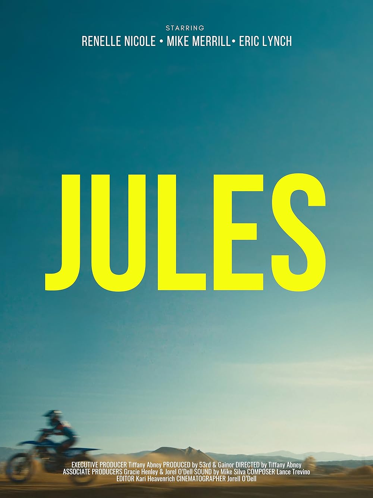
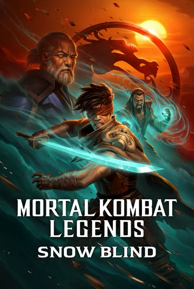
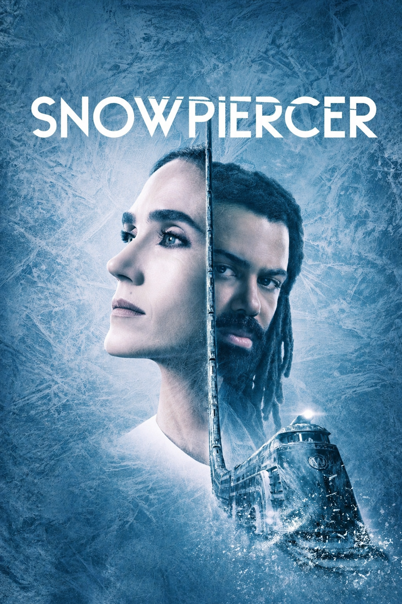
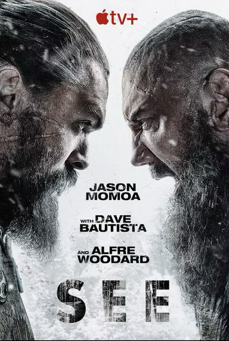

Our Work
A selection of our most recent works
True Crime Story:Smugshot

The Walking Dead: The Ones Who Live

Jules

Paradise City

Mortal Kombat Legends: Snow Blind

Snowpiercer

See Season 2

The Walking Dead
Focused collaborators for modern media.
At 3 Wines Music, we’re a tight-knit team of composers and sound designers trusted by studios worldwide. From pulse-pounding action to heartfelt documentaries and bold animation, every project is approached with focus, creativity, and respect for the story.

Lead Composer
Lance Treviño

Brand Manager
Francine Espinoza

Composer
Nate Weiner

Music Coordinator & Composer
JJ Bartley

Composer & Sound Designer
Tyler Gonelli

Composer & Music Editor
Cian Hutton
Studio collaborations